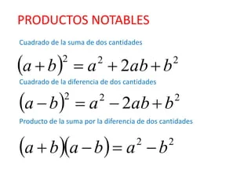
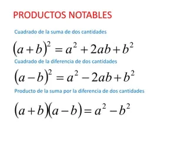

MATEMATICAS
MatematicasOPERACIONES CON POLINOMIOS
1. las operaciones con polinomios: sumas, resta, multiplicación y división. Y dar dos ejemplos de cada operación.
Suma de polinomios
La suma de polinomios se puede hacer de dos formas distintas: en horizontal y en vertical
Suma de polinomios en horizontal
Para hacer la operación en horizontal:
Primero escribimos un polinomio y seguido en la misma línea escribimos el otro que vamos a sumar o restar.
Después, agrupamos términos semejantes.

Ejemplo
Vamos a realizar la suma. Para ello escribimos cada uno rodeado de paréntesis y con el signo de la suma entre ellos.

Fíjate en los términos que son semejantes entre los dos polinomios.
No podemos sumar dos términos que tienen distinto grado, solo podemos agrupar los que sean semejantes y después sumar.
En la siguiente imagen están identificados los términos semejantes rodeados con el mismo color.

Igual que hemos hecho con el término de grado 2, debemos sumar los términos de grado 1 y los términos de grado 0.
El resultado de la suma es:

Suma de polinomios en vertical
Para hacer las sumas en vertical debemos:
Escribir el primer polinomio ordenado. En el caso de que sea incompleto es conveniente dejar los huecos libres de los términos que falten.
Después escribimos el siguiente debajo del anterior, de manera que coincida justo debajo el término semejante al de arriba.
Ya podemos sumar cada columna.
Ejemplo
Vamos a ver la suma en vertical con los dos polinomios del ejemplo anterior.

Fíjate en el primer polinomio. Hay que escribirlo ordenado y ver si está completo. En este caso falta el término de grado 3, entonces debemos dejar el hueco correspondiente o

Escribir un cero en su lugar. Ahora escribimos el segundo debajo del primero, de manera que coincidan los términos semejantes uno debajo de otro.

Solo queda sumar cada columna, es decir, sumar los términos semejantes

Resta de polinomios
Para restar dos o más polinomios, solo tenemos que combinar términos semejantes y considerar el orden de las operaciones. Algo importante que debe ser tomado en cuenta es distinguir los términos con signos “más” y “menos” en cada polinomio.
Seguimos los siguientes pasos para restar polinomios:
Paso 1: Eliminar todos los paréntesis. Para facilitar la visualización, es recomendable escribir el problema y cada proceso de forma vertical. Cuando eliminamos los paréntesis, tenemos que distribuir el signo negativo, lo cual hará que cada uno de los términos cambie de signo.
Paso 2: Combinar términos semejantes. Si es que escribimos los pasos de forma vertical, la combinación de términos semejantes resulta más fácil. Recuerda que, los términos semejantes son términos que tienen las mismas variables con los mismos exponentes.
Ejercicios de resta de polinomios resueltos
Usa los siguientes ejercicios para dominar el tema de resta de polinomios. Cada ejercicio tiene una solución detallada que indica el razonamiento usado para obtener la respuesta. Es recomendable que intentes resolver los ejercicios tú mismo antes de mirar la respuesta.
EJERCICIO 1
Realiza la sustracción de polinomios: (6�+8�) − (3�−2�) (6x+8y) − (3x−2y).
Solución
Tenemos que eliminar los paréntesis. Para realizar esto, tenemos que tomar en cuenta el signo negativo en frente del segundo polinomio, por lo que cambiamos de signo a todos los términos del segundo polinomio.
Luego, tenemos que agrupar términos semejantes:
(6�+8�)− (3�−2�) (6x+8y) − (3x−2y)
=6�+8�−3�+2�=6x+8y−3x+2y
=6�−3�+8�+2�=6x−3x+8y+2y
=3�+10�=3x+10y
Estos términos ya no son semejantes, ya que no tienen la misma variable, por lo que no podemos combinarlos.
EJERCICIO 2
Resuelve la resta (6�+8�)−(3�−2�)(6x+8y)−(3x−2y) verticalmente.
Solución
Podemos restar polinomios verticalmente al colocar a cada variable en su propia columna. Entonces, usamos la primera columna para la x y la segunda para la y.
Dado que estamos restando el segundo polinomio, tenemos que cambiar de signo a todos sus términos
6�+8�6x+8y
−3�+2�−3x+2y
___________________________
3�+10�3x+10y
Claramente, obtuvimos la misma respuesta que cuando restamos horizontalmente. Es posible resolver la resta de polinomios usando cualquier formato. Solo elige el formato con el que más te sientas a gusto.
Generalmente, cuando tenemos polinomios simples, el formato horizontal resulta más fácil. Sin embargo, para los polinomios más largos y complicados, restar verticalmente puede facilitar el proceso.
Multiplicaciones de polinomios
La multiplicación de polinomios puede resultar un poco más complicada que la suma o la resta de polinomios. Tenemos que usar la propiedad distributiva para multiplicar a cada término en el primer polinomio por cada término en el segundo polinomio.
Recordemos que la siguiente es la propiedad distributiva

El número o expresión algebraica debe ser distribuida a cada término del polinomio. Por ejemplo, podemos distribuir al 3 en 3(�+5)3(x+5) para obtener la expresión equivalente 3�+153x+15.
El polinomio resultante es simplificado al sumar o restar términos semejantes. Cada vez que multiplicamos polinomios, siempre obtenemos un polinomio con un grado mayor.
Entonces, para multiplicar polinomios, simplemente seguimos dos pasos:
Paso 1: Usar la propiedad distributiva para multiplicar cada término del primer polinomio por cada término del segundo polinomio.
Paso 2: Simplificamos al combinar términos semejantes.
Ejercicios de multiplicación de polinomios resueltos
Los siguientes ejercicios tienen su respectiva solución para entender el proceso usado para llegar a la respuesta. Es recomendable intentar resolver los ejercicios tú mismo antes de mirar la respuesta.
EJERCICIO 1
Multiplica al polinomio 2�+3�−52x+3y−5 por 2�22x2.
Multiplicamos a cada término del polinomio 2�+3�−52x+3y−5 por el monomio 2�22x2:
⇒ 2�2 (2�+3�−5)2x2(2x+3y−5)
=(2�2)(2�)+(2�2)(3�)+(2�2)(−5)=(2x2)(2x)+(2x2)(3y)+(2x2)(−5)
=4�3+6�2�−10�2=4x3+6x2y−10x2
En este caso, no tenemos términos semejantes, por lo que no podemos simplificar.
EJERCICIO 2
Multiplica al polinomio 2�+4�−5�2x+4y−5z por −4�−4x.
Solución
Multiplicamos a cada término del polinomio por el monomio:
⇒ −4� (2�+4�−5�)−4x(2x+4y−5z)
=−(4�)(2�)−(4�)(4�)−(4�)(−5�)=−(4x)(2x)−(4x)(4y)−(4x)(−5z)
=−8�2−16��+20��=−8x2−16xy+20xz
En este caso, tampoco tenemos términos semejantes, por lo que no podemos simplificar.
Divisiones de polinomios
Para dividir polinomios que contienen más de un término, tenemos que usar la llamada división larga de polinomios. Realizamos la división larga de polinomios siguiendo los siguientes pasos:
Paso 1: Tenemos que asegurarnos de que el polinomio está escrito en orden descendente. Si es que hay algún término faltante, usamos un cero para llenar un espacio o simplemente dejamos un espacio en blanco.
Paso 2: Dividimos al término con la potencia más grande dentro del símbolo de división por el término con la potencia más grande afuera del símbolo de división.
Paso 3: Multiplicamos o distribuimos la respuesta obtenida en el paso anterior por el polinomio en frente del símbolo de división.
Paso 4: Sustraemos lo obtenido y escribimos el siguiente término.
Paso 5: Repetimos los pasos 2, 3 y 4 hasta que ya no haya más términos restantes.
Paso 6: Escribimos la respuesta final. El término restante después de haber sustraído los últimos términos es el residuo. Debemos escribir al residuo como una fracción en la respuesta final.
Ejercicios de división de polinomios resueltos
El proceso de división larga mencionado arriba es usado para resolver los siguientes ejercicios de división de polinomios. Es recomendable que intentes resolver los ejercicios tú mismo antes de mirar la solución.
EJERCICIO 1
Resuelve la división de polinomios: �2+8�+15�+5x+5x2+8x+15.
Solución
Paso 1: Los polinomios ya están organizados en orden descendente.
Paso 2: Empezamos dividiendo al �2x2 por x, lo cual es igual a x.
Paso 3: Al multiplicar esta respuesta por el polinomio en frente (�+5)(x+5), tenemos �2+5�x2+5x.
Paso 4: Restamos esta expresión y obtenemos 3�3x. Bajamos al 15 para completar al polinomio.
Paso 5: Al dividir 3�3x por x, tenemos 3. Multiplicamos al 3
por �+5x+5 para obtener 3�+153x+15. Al restar obtenemos cero.
EJERCICIO 2
polinomios: 2�3+7�2+10�+8�+2 x+22x3+7x2+10x+8.
Solución

Paso 1: Aquí también los polinomios están organizados descendentemente.
Paso 2: Empezamos dividiendo al 2�32x3 por x, lo cual es igual a 2�22x2.
Paso 3: Multiplicamos esto por el polinomio �+2x+2, para obtener 2�3+4�22x3+4x2.
Paso 4: Restamos esta expresión para obtener 3�23x2. Bajamos al 10x para completar al polinomio.
Paso 5: Al dividir 3�23x2 por x, tenemos 3x. Multiplicando y restando, tenemos 4�4x. Bajamos el 8 para formar 4�+84x+8. Al dividir 4�4x por x, tenemos 4. Multiplicando y restando, tenemos 0.
Paso 6: La respuesta final es 2�2+3�+42x2+3x+4.
Productos notables: ¿qué son? ¿Cuáles productos notables hay?, casos y dar ejemplos para cada caso.
¿Qué son los productos notables? Los productos notables son simplemente multiplicaciones especiales entre expresiones algebraicas las cuales sobresalen de las demás multiplicaciones por su frecuente aparición en matemáticas. De ahí el nombre producto, que hace referencia a "multiplicación" y notable, que hace referencia a su "destacada" aparición.
Así bien, una vez aprendido dichos productos notables, no habrá necesidad de comprobar dicha multiplicación mecánicamente, es decir, solo debemos seguir las reglas aprendidas con anterioridad que caracterizan a cada producto notable.
¿Cuáles productos notables hay?
Los productos notables son expresiones algebraicas que se presentan con frecuencia y siguen patrones específicos que permiten simplificar su factorización o expansión de manera rápida y sencilla. Estos productos notables son herramientas útiles en álgebra y se basan en ciertas identidades
algebraicas fundamentales. Aquí tienes algunos productos notables comunes, junto con ejemplos para cada caso:
Cuadrado de un binomio: (a+b)2=a2+2ab+b2(a + b)^2 = a^2 + 2ab + b^2(a+b)2=a2+2ab+b2 (a−b)2=a2−2ab+b2(a - b)^2 = a^2 - 2ab + b^2(a−b)2=a2−2ab+b2
Ejemplos:
(x+3)2=x2+6x+9(x + 3)^2 = x^2 + 6x + 9(x+3)2=x2+6x+9
(2y−5)2=4y2−20y+25(2y - 5)^2 = 4y^2 - 20y + 25(2y−5)2=4y2−20y+25
Diferencia de cuadrados: a2−b2=(a+b)(a−b)a^2 - b^2 = (a + b)(a - b)a2−b2=(a+b)(a−b)
Ejemplos:
x2−4=(x+2)(x−2)x^2 - 4 = (x + 2)(x - 2)x2−4=(x+2)(x−2)
9y2−16=(3y+4)(3y−4)9y^2 - 16 = (3y + 4)(3y - 4)9y2−16=(3y+4)(3y−4)
Producto de una suma y una diferencia: (a+b)(a−b)=a2−b2(a + b)(a - b) = a^2 - b^2(a+b)(a−b)=a2−b2
Ejemplos:
(X+3)(x−3)=x2−9(x + 3)(x - 3) = x^2 - 9(x+3)(x−3)=x2−9
(2y+5)(2y−5)=4y2−25 (2y + 5)(2y - 5) = 4y^2 - 25(2y+5)(2y−5)=4y2−25
Cubo de un binomio: (a+b)3=a3+3a2b+3ab2+b3(a + b)^3 = a^3 + 3a^2b + 3ab^2 + b^3(a+b)3=a3+3a2b+3ab2+b3 (a−b)3=a3−3a2b+3ab2−b3(a - b)^3 = a^3 - 3a^2b + 3ab^2 - b^3(a−b)3=a3−3a2b+3ab2−b3
Ejemplos:
(x+2)3=x3+6x2+12x+8(x + 2)^3 = x^3 + 6x^2 + 12x + 8(x+2)3=x3+6x2+12x+8
(2y−1)3=8y3−12y2+6y−1(2y - 1)^3 = 8y^3 - 12y^2 + 6y - 1(2y−1)3=8y3−12y2+6y−1
productos notables:
Los productos notables son patrones algebraicos que nos permiten reconocer estas expresiones de manera más sencilla y trabajar con ellas de manera más ágil. Estos tienen aplicaciones en diversos campos, desde la factorización de ecuaciones hasta la simplificación de fórmulas en física y ciencias de la ingeniería.
Los productos notables son expresiones algebraicas que vienen de un producto que conocemos porque sigue reglas fijas y cuyo resultado puede ser escrito por simple inspección, es decir, sin verificar la multiplicación. Estas operaciones son fáciles de recordar sin necesidad de efectuar la multiplicación correspondiente.
 
